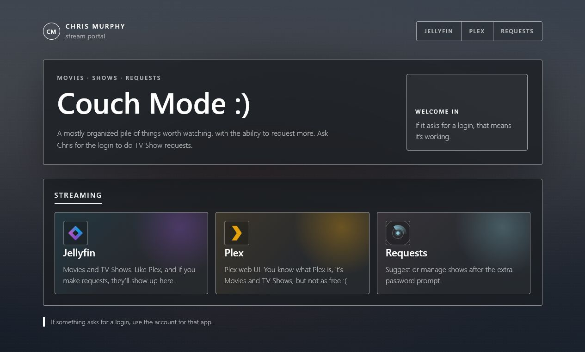
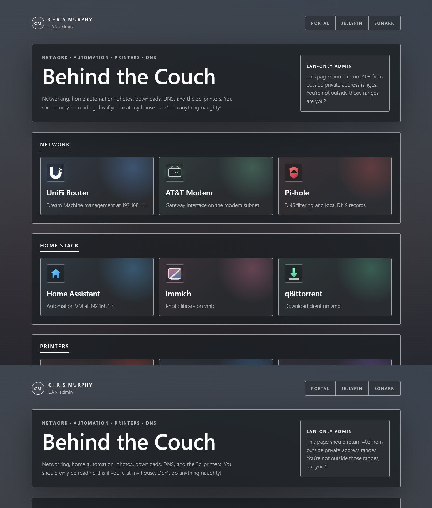

Making My Home Network Friendlier Without Making It Reckless
Like a lot of home lab projects, this started small and then kept growing. A media server became a few media tools. A few tools became automation. Automation became dashboards. Eventually I had enough useful services that the messy pile needed a front door.

Individually, none of these services are hard to reach. Together, they become a maze of ports, bookmarks, credentials, and half-remembered URLs. That is tolerable for the person who built it. It is not tolerable for family members who just want a normal-looking place to start.
I wanted the public side to feel boring in the best way: open a normal URL, see the streaming options, click the thing you need. No explaining ports. No sending someone a list of bookmarks. No asking people to understand how my home network is arranged.
So I added a small stream portal at stream.chrismurphy.org: one friendly page for the people I actually want to serve, and a separate private side for the tools that should not be treated like public websites.
The Public Front Door
The setup is not especially complicated, which is part of the point. Public traffic lands on Caddy, Caddy serves the portal, and only a few approved paths continue inward to specific services. That keeps the exposed attack surface small instead of publishing every useful thing on my network just because it has a web interface.
For the family-facing side, that means media and requests:
- Jellyfin and Plex for streaming.
- Requests for TV shows, protected separately because it can influence automation.
- Nothing else unless there is a good reason.
Everything else stays on the private side. If it manages the network, changes automation, touches downloads, exposes photos, or controls hardware, it does not need to be reachable by the entire internet. This is where the attack surface thinking matters. Each extra public service is one more application to patch, authenticate, monitor, and trust. The easiest service to secure is the one I never exposed in the first place.
The portal makes the setup friendlier, but the boundary makes it safer. I wanted friends and family to have less friction without giving the internet a tour of every service I run at home.
A nice homepage is useful, but it cannot be the security model by itself. The real win is deciding what should be reachable at all, then making the page reflect that decision.
The Part That Makes The Public Side Work: Why Caddy Was A Good Fit
Caddy is doing the front-door work here. It serves the portal page, handles HTTPS, and forwards only the routes I have chosen to expose. Caddy gave me the cleanest path from "I have services on my LAN" to "I have one HTTPS site with a few controlled routes." The useful thing about Caddy is that it keeps the public setup understandable. One config can describe the site, the certificate behavior, and the backend routes.
The automatic HTTPS part is a big reason I liked it. Once DNS and port forwarding are right, Caddy can request and renew certificates for the hostname automatically through ACME providers like Let's Encrypt. Automatic HTTPS is the part that makes this feel like a real public site instead of a sketchy home lab page with a browser warning.
That does not mean setup is magic. DNS has to be correct. The router has to forward the right ports. The local firewall has to allow the traffic. Caddy has to be able to bind to 80 and 443. But once those pieces are aligned, HTTPS becomes a boring maintenance task, which is exactly what I want HTTPS to be.
Reducing Exposure Without Pretending Risk Is Gone
This is the part where I have to be honest: putting something behind Caddy does not automatically make it safe.
Caddy can decide which requests go where. It can require authentication before a route is reachable. It can centralize TLS and make the public exposure easier to audit.
But if I expose a vulnerable app through Caddy, that app is still exposed. Weak authentication, bad input handling, and unpatched vulnerabilities do not disappear because the traffic passed through a nicer front door.
That is why I did not treat the portal as permission to publish everything with a web UI. I treated it as a chance to be more deliberate: make the useful public paths easier, and leave the rest of the network uninvited.
The rule I tried to follow: convenience is not a good enough reason to expose an admin tool.
I like this because it is easy to explain. The public page is for watching and requesting. The private side is for managing, fixing, downloading, configuring, and tinkering.
Behind The Couch
The private side is where the practical shortcuts live. If I am on the LAN and need to manage the house, I want one place to start.

I originally thought about making one clever page that changed everything based on where it was opened. There is a place for that kind of convenience, but for public exposure I prefer a stricter split: the public hostname stays focused on the family streaming use case, and the private tools stay private.
That is less clever, but easier to defend. The public site has a smaller job, and the private tools do not depend on a front-end decision to stay hidden.
The Little Things Matter
A surprising amount of this project was not the reverse proxy. It was the polish.
The portal needed to feel like a real page, not a pile of bookmarks. The main page is family-facing, so it does not lead with network language. It just shows the streaming options and the request flow. The local side can be more technical because that page is for me.
I also ran into small lessons that only show up when home infrastructure becomes real enough to use daily. For example, a service may reject requests if the browser sends a referrer from an unexpected origin. The answer is not to weaken the service's protections. The answer is to understand what the service is protecting against and make the portal behave cleanly around it.
What I Learned
This project gave me a better appreciation for boring boundaries.
Only forwarding 80 and 443 is boring. Keeping individual service ports off the internet is boring. Putting sensitive tools behind LAN-only access is boring. Letting Caddy renew certificates automatically is boring.
Good. Boring is the goal.
The fun part is the portal. The useful part is that the portal makes the home network easier to use without turning the whole house into an accidental public software stack.
A clean homepage is nice. A clean homepage with fewer exposed services is better.